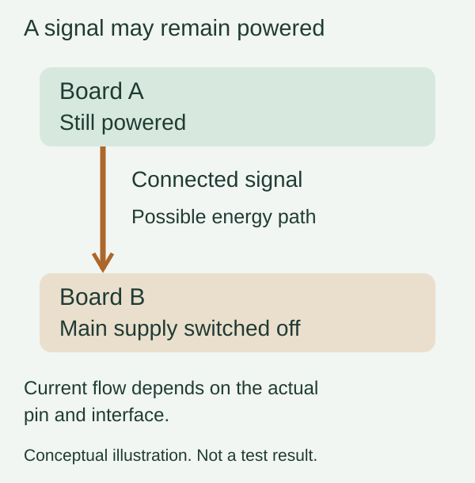

You switch off one board in a two-board prototype, but an indicator still glows faintly. Or the device restarts differently when a USB programming adapter is connected. It is tempting to blame the shutdown code. First, check whether the board has actually lost every source of electrical power.
A connected signal can sometimes carry energy into an otherwise unpowered device. Engineers call this back-powering. It matters when a sensor, display, controller or test adapter has a separate supply: turning off the main power connection does not necessarily disconnect the signals between them.
For a team preparing user trials, the useful question is not simply “does the switch work?” It is “what stays powered in each state, and what can cross into the part we intended to turn off?” A small connection map can make that question much easier to answer.

Follow the connections that remain after shutdown
List the things that can stay on: a USB adapter attached to a laptop, a separately powered sensor, or a display with its own supply. Then list their signal connections to the switched board. Include pull-ups connected to a supply that remains active. A connection that carries only information during normal operation may behave differently when the receiving device loses power.
Texas Instruments describes one such mechanism in its MSP microcontroller application report, revised August 2021. Voltage applied to a GPIO while the main supply is absent can feed the device through its protection structures. TI warns that this is not an intended powering scheme. That explanation applies to the devices covered by the report; it is not proof that every chip has an identical internal circuit.
Nor does a voltage reading alone tell you how much current the path can supply. Ask the engineer to distinguish a brief discharge of stored energy, a small leakage path and sustained back-powering. Record the relevant rail voltage, current and timing using a suitable test setup. A faint LED is a clue, not a diagnosis.
“Both are 3.3 V” only describes one power state
Pin voltage limits, such as those in RP2040 datasheet Table 622, are expressed relative to the I/O supply. When a receiving supply changes, a signal that was acceptable during normal operation may no longer be acceptable. Check the fitted chip, pin type and current datasheet. Absolute maximum ratings are stress limits; they are not recommended operating voltages or a promise that damage happens at one exact threshold.
This is also why selecting an interface by its normal HIGH and LOW levels is incomplete. A part may work between two powered 3.3 V boards yet behave differently when either supply is zero, floating or rising. The intended operating states belong in the interface requirements from the start.
Look for a supported power-off behavior
In a Chinese TI support question, a developer described two 3.3 V UART domains, one always powered and the other turned off during sleep. The response pointed to partial-power-down protection and its leakage specification. This is closely related to the integration problem, but it does not make that particular translator a universal solution.
The relevant term in many logic-device datasheets is Ioff. TI's explanation of partial power down describes a high-impedance condition with a specified maximum leakage when the supply is held at zero. Read the actual device's conditions, including enable pins, allowed input voltage and supply sequencing. A disconnected supply is not automatically held at zero.
Possible design changes include coordinating the power domains, deliberately isolating the relevant signals, or choosing an interface with documented behavior for the required off state. The engineer needs to evaluate the real circuit. Setting an output to an input in firmware may be part of a plan, but it cannot by itself guarantee behavior before the program starts, during reset, or after power disappears.
Include startup, not just the final off state
Power sequencing can create a similar issue for only a short interval. An August 19, 2026 MPS community teardown raised exactly this concern: could a button signal reach the microcontroller before its supply had started? The author posed it as an open design question. The post is useful context, not a verified failure report or evidence of an October trend.
For your prototype, agree on a small set of repeatable checks: both boards powered, either board powered alone, normal shutdown, and the actual startup order. Include the programming adapter if it will be used during service. Define what counts as off for the product: acceptable standby current, which functions remain available, and how it should restart. These criteria depend on the design; there is no single current limit to copy into every project.
Use those results to decide whether the issue belongs in firmware sequencing, interface circuitry or the power arrangement. A prototype that works only when every cable is connected in one undocumented order is difficult to hand to someone else. If you need help integrating separately working boards, discuss the prototype with Anvol. Bring the board revisions, connection diagram and the power sequence that produces the unexpected behavior.